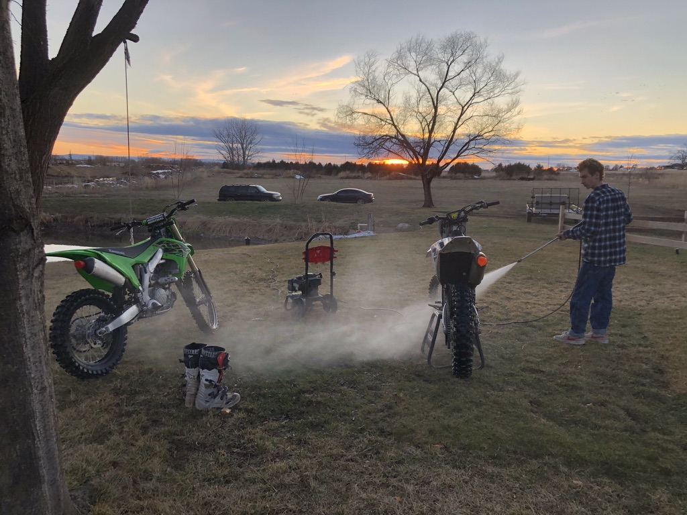

Where do I see myself in 10 years?
In my vision for the next decade, I see myself as a successful entrepreneur who has navigated the exhilarating highs and challenges of building and selling my first company, while fervently laying the groundwork for my second venture. Amidst the hustle and bustle of business endeavors, I am blessed to have a supportive and loving wife by my side, as we work together to build a family filled with love and joy. Committed to maintaining a balanced lifestyle, I prioritize my health and well-being, striving to stay active and vibrant.
As I pursue my professional goals, I remain deeply rooted in my values, dedicating myself to supporting and uplifting my family in every possible way. Harnessing the power of social media, I aspire to become an influencer with 1.5 million followers, using my platform to inspire and empower others. Grounded in faith, I prioritize regular scripture study and temple attendance, finding solace and guidance in spiritual practices. Alongside my personal pursuits, I aim to indulge my passion for adventure by owning a skidster, a TRX Ram, a Mercedes Sprinter Van, a classic C10 73 Chevy truck, and a Harley motorcycle.
Goals and Timeline (10 years):
- Build and sell second successful company - within 5 years
- Start a family and nurture a loving relationship with my wife - ongoing
- Maintain a healthy lifestyle through regular exercise and mindful eating - ongoing
- Support family members financially and emotionally - ongoing
- Grow social media presence to reach 1.5 million followers - within 7 years
- Prioritize daily scripture study and attend the temple regularly - ongoing
- Acquire a skidster, TRX Ram, Mercedes Sprinter Van, C10 73 Chevy truck, and Harley motorcycle - within 10 years
My Hobbies...
In my spare time, I find joy in a variety of activities that keep me engaged and fulfilled. Riding my dirtbike allows me to embrace adventure and explore new trails, providing me with a sense of freedom and excitement. I'm passionate about music, and playing instruments like the guitar and cello allows me to express myself creatively and immerse myself in beautiful melodies. Engaging in sports like hockey and Jiu Jitsu not only keeps me physically active but also teaches me valuable lessons in discipline, teamwork, and resilience. Snowboarding during the winter months allows me to challenge myself and enjoy the thrill of speeding down the slopes while surrounded by breathtaking scenery.
 Bathed in hues of gold, we chase the setting sun, in nature's embrace, friendship forever spun.Spending quality time with friends and family, whether it's watching movies together or simply enjoying each other's company, strengthens our bonds and creates cherished memories. Golfing provides me with relaxation and the opportunity to refine my skills while enjoying the outdoors. Fishing is a serene activity that allows me to connect with nature and appreciate the beauty of the great outdoors. Each hobby brings its own unique benefits, contributing to my overall well-being and happiness.